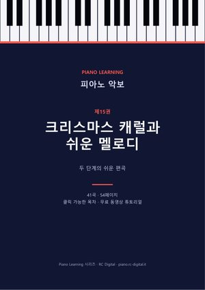
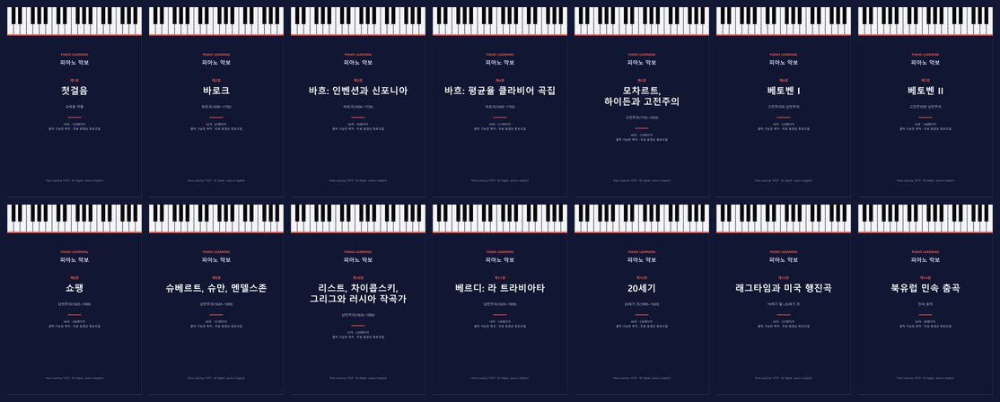
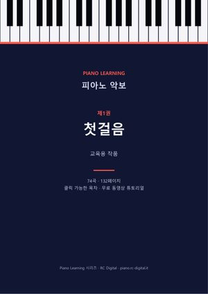
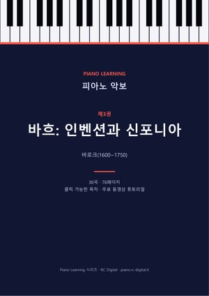
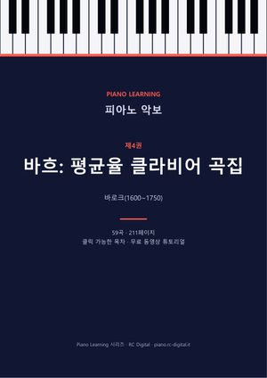
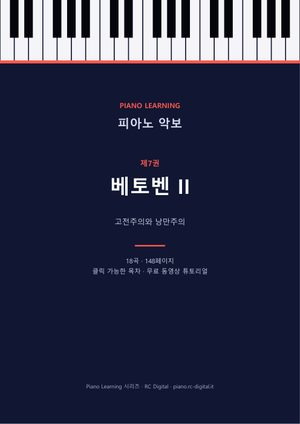
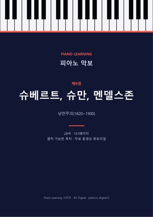
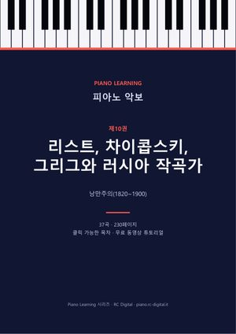
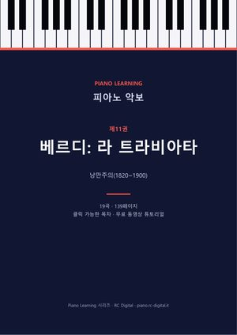
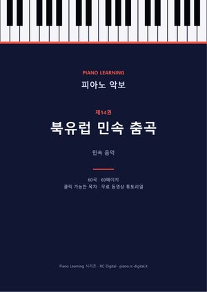

제15권크리스마스 캐럴과 쉬운 멜로디41곡 · 54페이지€3.99구매하기
Piano Learning · PDF
564 곡 · 1933 악보 페이지 · 14 권 · 10 개 언어


제15권크리스마스 캐럴과 쉬운 멜로디41곡 · 54페이지
제1권첫걸음74곡 · 132페이지 제2권바로크62곡 · 87페이지
제2권바로크62곡 · 87페이지
제3권바흐: 인벤션과 신포니아30곡 · 76페이지
제4권바흐: 평균율 클라비어 곡집59곡 · 211페이지 제5권모차르트, 하이든과 고전주의40곡 · 116페이지
제5권모차르트, 하이든과 고전주의40곡 · 116페이지 제6권베토벤 I18곡 · 125페이지
제6권베토벤 I18곡 · 125페이지
제7권베토벤 II18곡 · 148페이지 제8권쇼팽46곡 · 186페이지
제8권쇼팽46곡 · 186페이지
제9권슈베르트, 슈만, 멘델스존28곡 · 151페이지
제10권리스트, 차이콥스키, 그리그와 러시아 작곡가37곡 · 230페이지
제11권베르디: 라 트라비아타19곡 · 139페이지 제12권20세기40곡 · 136페이지
제12권20세기40곡 · 136페이지 제13권래그타임과 미국 행진곡33곡 · 127페이지
제13권래그타임과 미국 행진곡33곡 · 127페이지
제14권북유럽 민속 춤곡60곡 · 69페이지목차에서 곡 제목을 누르면 바로 그 페이지로 이동합니다. 책갈피도 있습니다.
지금 연주하는 음악을 누가 썼는지 몇 줄로 알려 드립니다.
악보에서 떨어지는 음표 영상으로 바로 이동합니다. 튜토리얼이 있는 모든 곡에 링크가 있습니다.
한 번 구매하면 원하는 언어의 판을 내려받을 수 있습니다.
전집에 실린 네 곡의 첫 페이지입니다. 페이지를 누르면 그 곡의 페이지가 열립니다.
PDF입니다. 컴퓨터, 태블릿, 휴대폰에서 열 수 있고 인쇄도 할 수 있습니다. 각 권은 클릭 가능한 목차와 책갈피가 있는 하나의 파일입니다.
모든 구매에 10개 언어의 판이 포함됩니다: 이탈리아어, 영어, 독일어, 스페인어, 프랑스어, 포르투갈어, 러시아어, 중국어, 일본어, 한국어. 원하는 판을 내려받으시면 됩니다.
결제 직후 다운로드 페이지가 열리고 링크가 담긴 이메일도 받습니다. 낱권은 PDF 하나이고, 전집은 언어별 ZIP 파일 하나에 PDF 14개가 들어 있습니다(약 50MB).
네. 자유 판본(퍼블릭 도메인 또는 Creative Commons)이라 이 사이트의 곡별 페이지에 무료 링크가 있습니다. 전집은 모든 곡을 작곡가와 시대별로 정리하고 목차, 작곡가 소개, 튜토리얼 링크, 각 판본의 출처를 담았습니다.
아니요. 제15권 「크리스마스 캐럴과 쉬운 멜로디」은 €3.99에 따로 판매합니다. 전집에는 제1권부터 제14권까지 들어 있습니다.
Payhip 안전 결제 후 이메일로 바로 다운로드합니다. 악보는 자유 판본(퍼블릭 도메인 또는 Creative Commons)으로, 이 사이트의 곡별 페이지에서 한 곡씩 무료로도 받을 수 있습니다. 여기서는 모두 하나의 파일로 정리하고 각 판본의 출처를 모두 밝혀 두었습니다.